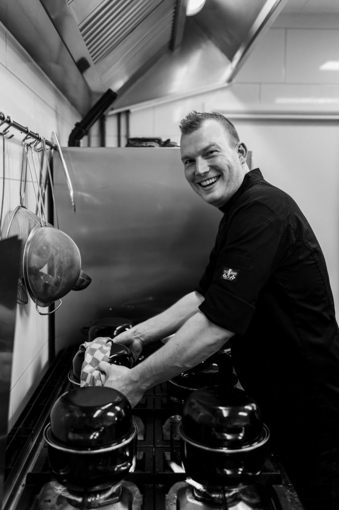
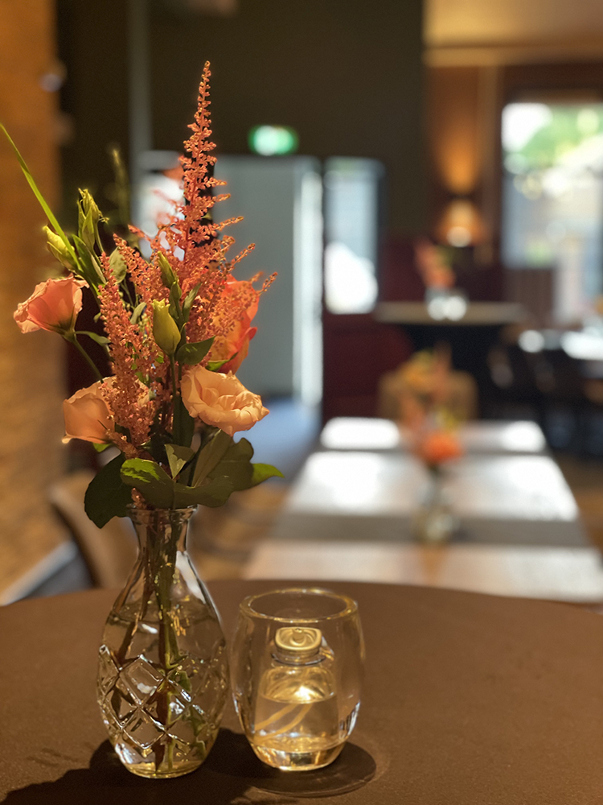

Café, feesten en eten in het hart van Wagenberg
Voor jong en oud een ontmoetingsplaats in het dorp, 6 dagen in de week.
Onze keuken is nu ook op donderdag open voor diner, vanaf 17:00. Komt u eten? Reserveren vinden wij erg fijn!

Welkom Bij Bas
Een gezellig dorpscafé in het centrum van Wagenberg. Met ongeveer 2200 inwoners is dit een ons-kent-ons dorp.
Bij Bas is voor jong en oud een ontmoetingsplaats in het dorp en staat 6 dagen in de week voor u klaar. Door de huiselijke sfeer voelt ieder zich er gelijk thuis en komt de warmte en gezelligheid u tegemoet.
Naast het café, waar u terecht kunt voor een praatje, een lekker kopje koffie, frisdrank, verschillende biertjes of een wijntje, zijn wij in het weekend meer eetcafé en restaurant. Daarnaast hebben we een aparte feestzaal waar u verjaardagen, bruiloften, koffietafels en meer kunt vieren.
Kortom: Bas en zijn team maken het u zo huiselijk en gezellig mogelijk en ontvangen u graag voor een hapje, drankje of feestje.
Bas Mulder
Het café
Een gezellig dorpscafé waar kan worden gebiljart, gedart of gewoon een lekker praatje gemaakt, onder het genot van een pilsje of speciaalbiertje.
Met verschillende biertjes op de kaart, mooie wijntjes en een lekker kopje koffie is er voor ieder wel wat wils.
- Biljart
- Darts
- Pils en speciaalbier
- Wijn en koffie


Eten Bij Bas
Het hele jaar is onze keuken open van donderdag tot en met zondag, vanaf 17:00.
Wij serveren een mooie kaart met lekkere en zeer betaalbare gerechten, zoals biefstuk, zalmfilet en de Bij Bas burger, brood met smeersels en andere lekkere voor-, hoofd- en nagerechten.
Om zeker te zijn van een plekje in ons gezellige eetcafé raden wij u aan even te reserveren. Zo voorkomt u teleurstelling of lange wachttijden. Ook met een grotere groep bent u welkom: wij hebben altijd een passende oplossing, vraag gerust naar de mogelijkheden.
Menukaart
Zomerkaart 2026. Prijzen in euro.
- 7,5
Brood met smeersels
Wit en bruin brood met aioli, tapenade en kruidenboter
- 7
Italiaanse pomodorisoep
Huisgemaakte tomatensoep (vegetarisch)
- 8
Thaise kippensoep
Huisgemaakte kippensoep met kokosmelk, rode peper en citroengras
- 12,5
Knoflookgarnalen
Pannetje met in olie gegaarde garnalen, knoflook en chiliflakes
- 12,5
Carpaccio*
Rundercarpaccio met sla, geroosterde tuinbonen, Grana Padano en truffelmayo
- 12
Kipsalade*
Salade met kipreepjes, tomaat, komkommer en frisse dressing
- 13,5
Vissalade*
Salade met gerookte zalm, garnalen, rode ui, tomaat, komkommer en cocktaildressing
- 13
Geitenkaassalade*
Salade met warme geitenkaas, honing en noten
- 14 p.p.
Tapasschotel Bij Bas
Combinatie van verschillende warme en koude gerechten met een mandje brood, vanaf 2 personen
* Salades zijn ook te bestellen als grote salade, meerprijs 4,5.
Alle hoofdgerechten worden geserveerd met frites en salade.
- 17,5
Dorpshap
Iedere maand een ander gerecht, zie onze krijtborden
- 17,5
Kipsaté
Twee goed gevulde stokken kipsaté met satésaus
- 18
Kip piri-piri
Kipfilet met ui, paprika en piri-pirisaus. Ook vegetarisch te bestellen
- 21
Steak
Kogelbiefstuk met truffeljus of pepersaus
- 18,5
Classic burger
Domburger runderburger met sla, tomaat, rode ui, emmentaler, augurk en classic burgersaus
- 23
Spareribs
Ribs afgelakt met sweet & spicy bbq, met knoflook- en chilisaus
- 19
Souvlakispies
Grieks gekruide varkenshaasspies met tzatziki. Ook als varkenshaas oosters te bestellen
- 19,5
Gamba la bamba
Gebakken gepelde gamba's in chiliroomsaus
- 21,5
Zalmfilet
Op de huid gebakken zalmfilet met hollandaisesaus en zeekraal
- 25,5
Surf & turf
Kogelbiefstuk met truffeljus of pepersaus en 2 gebakken gamba's met knoflookdip
- 5
Kindersoepje
Klein kommetje tomatensoep
- 7
Friet met frikandel, kroket of nuggets
Met mayonaise, appelmoes en een lolly
- 7
Kids pizza
Pizza op kinderformaat
- 6
Poffertjes
Met poedersuiker
- 5,5
Kinderijs
Leuke kinderbeker met vanille-ijs, slagroom en Smarties, met een kleine verrassing
- 6,5
Dame blanche
Coupe vanille-ijs met warme chocoladesaus en slagroom
- 9,5
Crème brûlée
Huisgemaakte crème brûlée met rood fruit en slagroom
- 8 / 35
Sgroppino
Italiaanse cocktail met wodka, citroensorbetijs en prosecco. Per glas 8, per kan van 1 liter 35
- 14
Kaasplankje
Verschillende kazen, vijgenbrood en noten
- 10
Choco & caramel
Chocolade-lavacake met stroopwafelijs, macaron, karamelsaus en slagroom
- 13,5
Cello-proeverij
Proeverij van 3 soorten 'cello's' met een bolletje sorbetijs
Zin in een speciale koffie? Vraag naar onze koffiekaart.
Allergie? Bespreek het met een van onze medewerkers.
Menukaart als pdf

Het terras
In de zomermaanden kunt u bij goed weer genieten van een drankje of hapje op ons terras. Met 26 plaatsen langs de doorgaande weg is er altijd wel wat te zien, of iemand om naar te zwaaien!
Feesten Bij Bas
Bij Bas heeft een feestzaal voor verjaardagen, bruiloften, koffietafels en meer. Groot of klein: u bent aan het juiste adres.

- 30personen: de zaal is op te delen tot een kleinere ruimte
- 150personen in de feestzaal
- 300personen als we het café erbij betrekken
Meer weten over feesten? Wij geven u graag een vrijblijvend persoonlijk advies.
Neem contact opVergaderen
Wij hebben een kleine zaal waar u met een groep tot 25 personen prima kunt vergaderen.
- Tot 25 personen
- Eigen toilet
- Airco
- Beamer en projectiescherm bespreekbaar
Voor meer informatie over vergaderen of grotere gezelschappen kunt u vrijblijvend contact met ons opnemen.
Contact
Bij BasDorpsstraat 26
Wagenberg
076 - 593 15 66
info@bijbaswagenberg.nl
Geopend vanaf
| Maandag | 19:00 |
|---|---|
| Dinsdag | gesloten |
| Woensdag | 19:00 |
| Donderdag | 17:00 |
| Vrijdag | 15:00 |
| Zaterdag | 15:00 |
| Zondag | 15:00 |
Keuken: donderdag tot en met zondag vanaf 17:00.
Volg ons op Instagram en Facebook voor de dorpshap van de maand en wat er verder Bij Bas gebeurt.